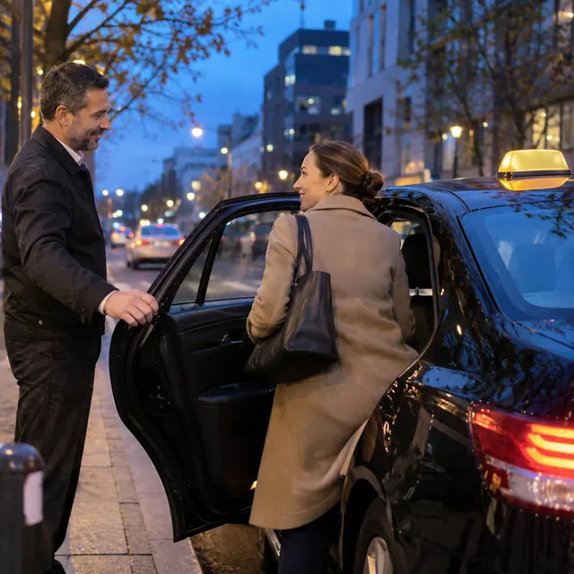
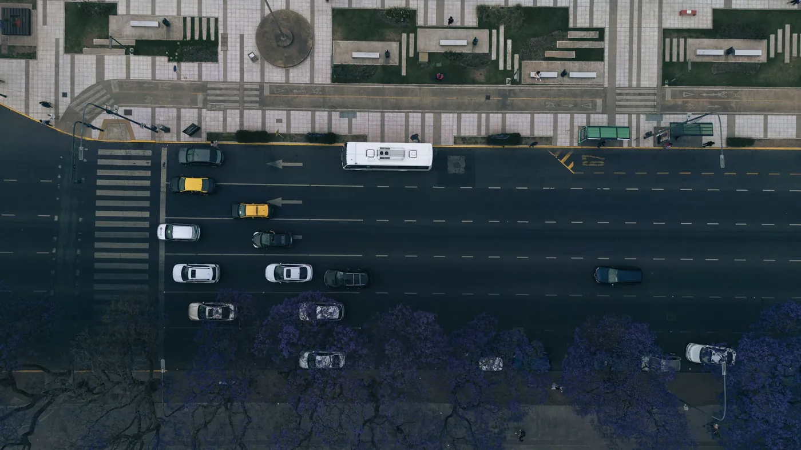
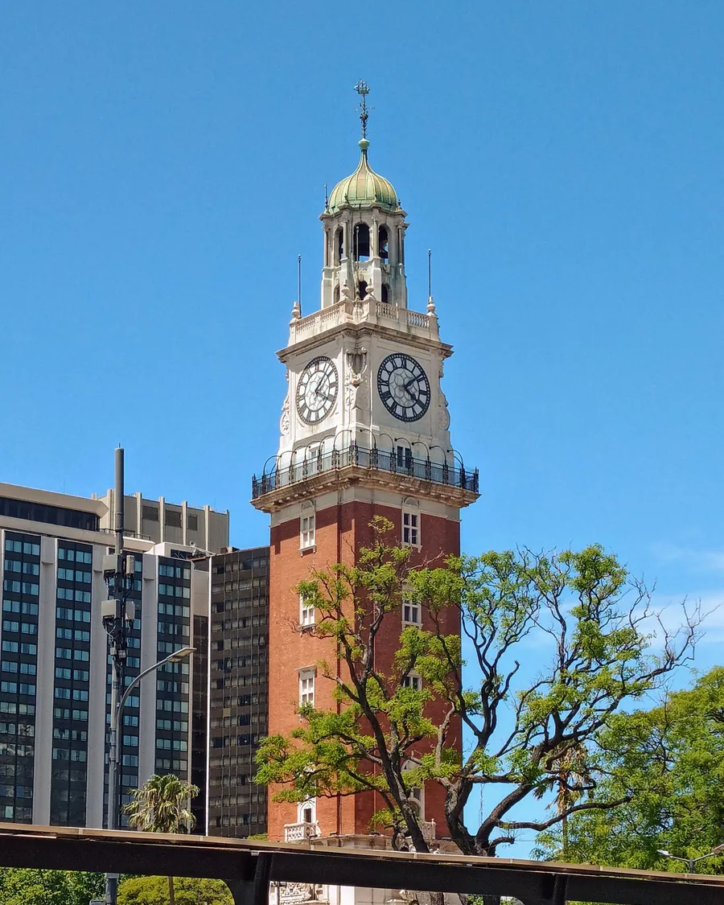
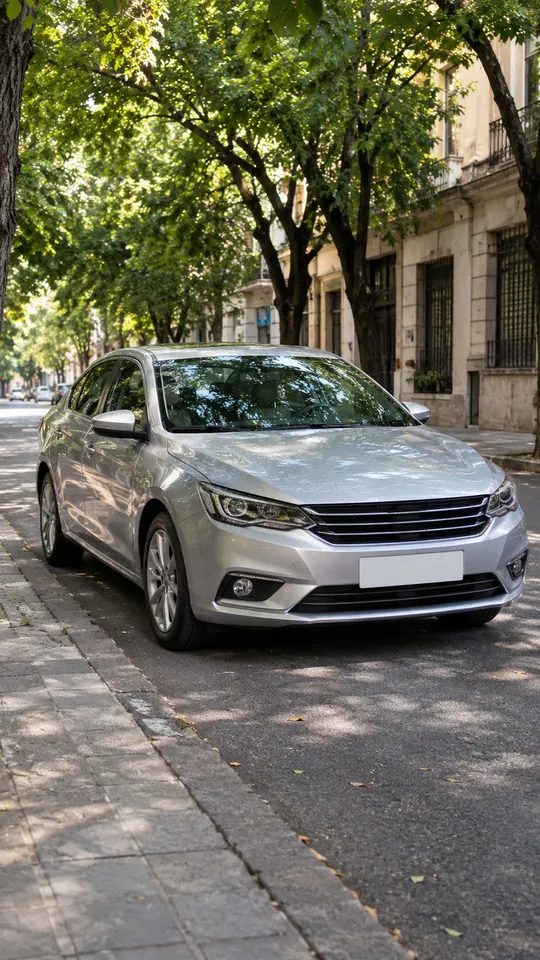
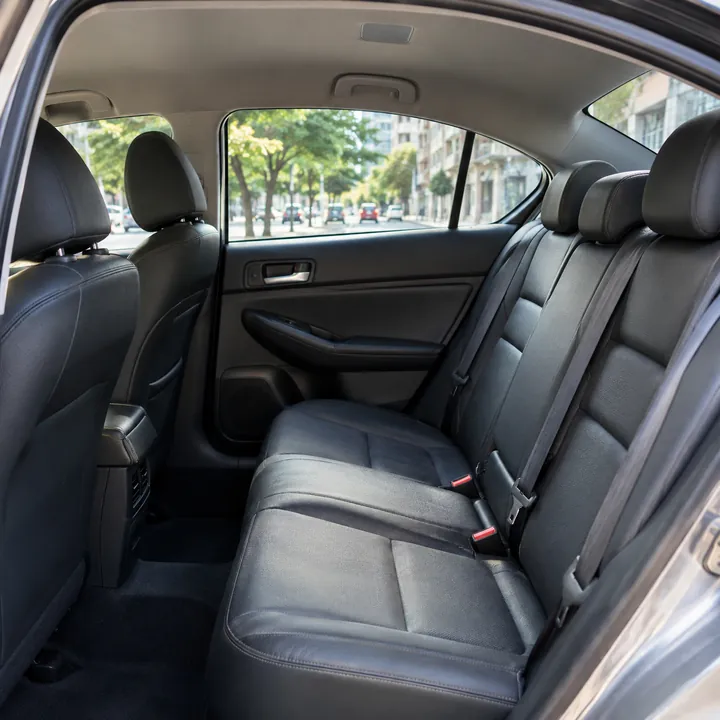

Taxi y traslados de puerta a puerta en Buenos Aires
Buen viaje al destino.
Viajes por la ciudad, al aeropuerto o a la terminal. Nos pasás de dónde salís y a dónde vas, y coordinamos todo por WhatsApp.
Un auto para moverte, un traslado para llegar a tiempo
Contanos tu punto de partida y destino, y elegí cómo querés viajar.
Pedir mi viaje-

TaxiViajes por la ciudad
Para ir al trabajo, a un turno o volver a casa. Nos decís dónde estás y a dónde vas, y te confirmamos cuándo pasamos.
- En la ciudad y alrededores
- Te buscamos donde nos digas
- Todo por WhatsApp, sin apps
-
Traslados Con día y horario reservado
Para no correr el día del viaje: lo agendamos antes y te pasamos a buscar a la hora acordada.
- Ezeiza y Aeroparque, ida o vuelta
- Terminales y estaciones
- Turnos, trámites y eventos
- Otras localidades, a coordinar
La ciudad, de punta a punta
Del Obelisco a Retiro, del casco histórico a Puerto Madero: te llevamos a donde tengas que ir.
Imágenes ilustrativas de Buenos Aires.


¿Vas a otra localidad?
Escribinos el destino y el día, y lo coordinamos.
Consultar el viaje
Del primer mensaje a tu destino
-
01
Nos escribís
Por WhatsApp o con el formulario de abajo: de dónde salís, a dónde vas y a qué hora.
-
02
Confirmamos el viaje
Te respondemos con el horario en que te pasamos a buscar.
-
03
Te buscamos en la puerta
Te avisamos al llegar y te damos una mano con las valijas.
-

04Llegás a destino
Te dejamos donde dijiste, sin vueltas.
¿De dónde a dónde vas?
Completá los datos y se arma el mensaje para WhatsApp: lo mandás y te confirmamos el viaje.